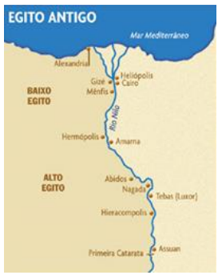
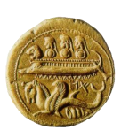

ANTIGUIDADE ORIENTAL: A FORMAÇÃO DOS ESTADOS E O DESENVOLVIMENTO DA CULTURA.
Ao iniciarmos nosso estudo sobre a Antiguidade Oriental iremos conhecer uma série de fatos importantes e processos que marcaram a história da humanidade como um todo. Estes processos repercutem ainda nos dias de hoje na vida das pessoas até mesmo nas coisas consideradas mais naturais a elas. É importante que ao longo do nosso estudo consigamos juntar elementos que respondam as seguintes indagações: Como se deu o processo de formação do Estado no Egito e demais povos estudados? Qual o papel do faraó na sociedade egípcia? Qual o principal legado dos sumérios no campo jurídico? Como a religião dos hebreus influenciou a humanidade, especialmente o mundo ocidental até os dias de hoje? Qual a principal atividade desenvolvida pelos fenícios e qual a sua maior criação que nos chega aos dias atuais?
Assista ao vídeo disponível abaixo e tome notas dos aspectos que mais chamarem a sua atenção:
EGITO

A história do Egito que conhecemos está diretamente ligada ao processo de unificação feito
pelo rei do Alto Egito, Menés I, considerado o primeiro faraó que, por volta de 3200 a.C., deu
início a uma nova fase da história daquele reino.
Antes de ser feita a unificação entre: o Alto Egito
também chamado de Terra do Sul e o Baixo Egito,
conhecido como a Terra do Norte, prevalecia a
autoridade dos nomarcas dos “nomos”, ou seja,
das lideranças diretas das comunidades locais
onde se desenvolviam de forma autônoma a
economia, a política e a administração.
Posteriormente, o faraó torna-se um governante
extremamente poderoso e centralizador a fim de
garantir que a população sob o seu comando
executasse de forma ágil e sem maiores
contestações, todo um vasto processo de trabalho
servil capaz fazer com que a sociedade egípcia
funcionasse de maneira eficiente em seus mais
diversos setores.
http://rede.novaescolaclube.org.br/planos-de-aula/mostrecara-do-antigo-egito-no-tempo-de-akhenaton-e-do-rei-tutancamon
CONSTRUINDO CONHECIMENTOS
No modelo de sociedade que se desenvolve no antigo Egito, o Estado era o proprietário das terras, e o faraó era a liderança sob o qual se dava a condução das atividades produtivas de toda nação, entre elas as obras públicas e demais construções que eram vitais para a reprodução da vida material e também das próprias crenças deste povo.
Contudo, o faraó não governava sozinho, isso nem seria possível dada as proporções que tomou este vasto império. Na realidade, muito do que era efetivamente levado a efeito passava primeiramente pelo corpo de auxiliares que lhe davam o suporte técnico e garantiam assim o êxito do seu governo. Trata-se dos diversos tipos de funcionários públicos, militares, fiscais e escribas que garantiam o bum funcionamento desta complexa sociedade. Graças a eles o faraó obtinha as informações necessárias para a administração e condução das diversas atividades que eram e realizadas em diferentes locais sob o seu domínio.
A população, de um modo geral, morava em pequenas cabanas de junco, madeira e barro que normalmente eram construídas nos locais elevados devido as constantes inundações por que passava a região às margens do rio Nilo. Estas moradias simples na maioria das vezes, tinham uma única divisão e pouquíssimos móveis. Usavam esteiras para sentar e também para dormir, alguns poucos utensílios de cozinha e vasos onde guardavam bebidas e alimentos. Cenas do cotidiano pintadas nos túmulos mostram mulheres vestidas de forma simples, por vezes envolvidas em oferendas ou ainda acompanhando o homem em suas atividades diárias. Noutros casos podemos observar mulheres que desempenham trabalhos servis, produzindo alimentos, pães e cerveja, ou ainda fiando ou tecendo no que parece ser o interior de domicílios de famílias abastadas.
No que tange a religião, o politeísmo era uma das suas principais formas de expressão, assim como o antropomorfismo, ou seja, a junção de características humanas e animais em seus deuses. Os diversos deuses por eles cultuados desempenhavam papéis variados, sendo a eles atribuídas determinadas características. Além disso, assim como acontece com os homens, os deuses egípcios também nasciam, envelheciam e morriam, eles tinham sentimentos e necessitavam alimentar-se.
Dentre todos os cultos o de Ísis e Osíris eram os mais significativos justamente por acreditarem que este casal foi o responsável pelo povoamento do Egito e pela difusão das técnicas de agricultura que tornaram a vida possível em uma região de tanta adversidade.
MESOPOTÂMIA
O território localizado onde fica o atual Iraque no Oriente Médio desenvolveu-se um expressivo contingente populacional que entrou para a história como sendo as civilizações mesopotâmicas. Mesopotâmia significa “região entre rios”, e neste caso tratam-se dos rios Tigre e Eufrates, situados na conhecida região do “crescente fértil”, que se estende entre o mar Mediterrâneo, o Golfo Pérsico e o rio Nilo.
Os sumérios e acádios formaram as primeiras civilizações naquele local, isto por volta do final do quarto milênio a.C. Eles deslocaram-se das regiões do planalto iraniano para povoar uma região com maiores recursos e possibilidades ao desenvolvimento da vida. Passaram então a criar eficientes sistemas de drenagem capazes de controlar a irrigação dos rios e a proteção contra as enchentes dos pântanos, o que possibilitou a criação dos primeiros núcleos urbanos que posteriormente tornaram-se grandes cidades como Eridu, Ur e Uruk.
A sociedade mesopotâmica organizava-se em núcleos familiares onde os camponeses, artesãos e pastores que se dedicavam a criação de animais como ovelhas, porcos, cabras e gado, desenvolviam as suas atividades. Além do suprimento e abastecimento de água necessário para garantir a vida no local, rios que banhavam aquela região também serviam como vias de transporte de mercadorias.
Na mesma região também desenvolveram-se as civilizações dos amoritas ou babilônios, dos assírios e dos caldeus. Coube aos babilônicos o desenvolvimento de um dos primeiros códigos jurídico que se tem conhecimento, elaborado pelo rei Hamurabi, e que entrou para a história como o Código de Hamurabi.
Uma pausa para pensar
Faça uma rápida pesquisa na internet buscando informações sobre o “Código de Hamurabi”, anote as principais informações e, após, faça uma nova busca procurando informações sobre a Constituição Brasileira. Estabeleça uma relação entre os dois códigos.
Não apenas na Babilônia, mas em outras cidades-estado da Mesopotâmia existia a figura do rei que era também chefe militar e sacerdote da religião local.
HEBREUS
Outro povo que merece destaque na antiguidade é o dos hebreus. Ao contrário de outros povos da região do oriente médio da qual falamos até o momento, os hebreus desenvolveram uma crença religiosa monoteísta, ou seja, eles cultuavam a um só Deus que chamavam de Jeová. A história dos hebreus está muito baseada nos relatos da Torá, principal texto religioso deste povo, além de terem suporte científico em investigações arqueológicas.
Por volta de 2000 anos a.C. temos as primeiras informações a respeito deste povo que se originou na região da Palestina, entre o deserto da Arábia, atuais Líbano e Síria, próximo do Mar Mediterrâneo e do rio Jordão, no que passou a ser conhecido como a “terra de Canaã”. Assim como os árabes, os hebreus também são um povo de origem semita, ou seja, fazem parte de um mesmo conjunto linguístico que abrange diversos povos daquela região.
Os povos que compuseram a civilização hebraica eram dispersos em diferentes clãs, formados por tribos seminômades que tinham como princípio administrativo uma estrutura patriarcal e familiar dedicada principalmente à economia pastoril.
FENÍCIOS
Além de uma economia voltada à agricultura e ao pastoreio, os fenícios desenvolveram um forte sistema de comércio que centralizava a distribuição dos produtos das caravanas que vinham de diferentes pontos do oriente e que, via mar Mediterrâneo, seriam comercializadas nos mais diferentes locais. Foi o posicionamento geográfico privilegiado que fez deste povo o grande motor do comércio naquela região. Dentre os vários centros urbanos da fenícia destacam-se Arad, Biblos, Ugarit, Tiro e Sídon.

E se em um primeiro momento o desenvolvimento do comércio entre
os fenícios aconteceu primordialmente através da realização de trocas
de mercadorias, na medida em que este comércio foi sendo
intensificado, passaram a ser cunhadas moedas a fim de tornar mais
fácil o desenvolvimento dos negócios.
https://pt.slideshare.net/marcosotilio/fencios-cultura-embarcaes-moeda-artes-e-muitos-mais
Entre os principais produtos produzidos e comercializados pelos fenícios estão o artesanato de excelente qualidade, as madeiras retiradas das montanhas e que serviam para os mais diversos fins, sendo muito apreciados em toda a região do Mediterrâneo, os tapetes de padrão elevadíssimo, o trabalho com pedras, marfim, vidro e metais que eram de grande requinte e apreciadíssimos em todos os reinos do período.
VOCÊ JÁ PENSOU SOBRE ISSO?
Uma das mais importantes contribuições resultante do comércio entre os fenícios foi a criação e o desenvolvimento de um dos mais antigos e bem elaborados alfabetos de que se tem notícia na História. A criação e o emprego do alfabeto serviram aos fenícios na regulação, registro e controle de suas atividades comerciais, viabilizando a expansão da comunicação entre povos distintos. Séculos mais tarde, a civilização greco-romana foi diretamente influenciada pelo sistema inaugurado pelos fenícios.
O QUE APRENDI
Em nosso estudo aprendemos como aconteceram a formação dos primeiros Estados na região do crescente fértil que abrange os atuais estados da Palestina, Israel, Jordânia, Kuwait, Líbano e Chipre, Síria, parte do Egito, Turquia e Irã.
Estes povos desenvolveram uma cultura rica em elementos simbólicos e uma vida material que superou tudo aquilo que existira até aquele momento. Além disso, Os Estados formados naquele período desenvolveram um modelo de administração centralizadora e teocrática.
Em termos econômicos a agricultura, o pastoreio e o comércio estiveram presentes na vida destes povos. Graças a eles temos muitas coisas que ainda hoje são por nós utilizadas ou que serviram de base para o aprimoramento e utilização nos dias atuais.